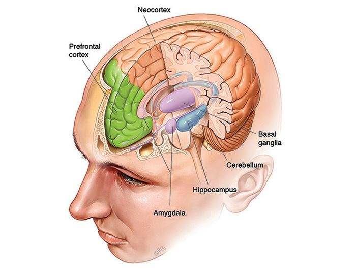

Learning How to Learn
Agenda
- Motivation
- How the Brain learns
- Learning Techniques
Motivation
“Learning how to learn is life's most important skill”
- Tony Buzan (Mind Mapping)
- everybody: walk, talk, read, write, cycling
- programmers: new languages
Motiviation
“The more you learn, the more you earn.”
- Warren Buffet
Brain Structure
Neuroplasticity
- learning is a brain activity
- forming synapses between neurons
Learning Modes


Working Memory
- Short-Term Memory
- Prefrontal Cortex
- 4 items
- Easy to distract
- Used in Focus Mode

Long-Term Memory
- Neocortex
- Unlimited space
- Hard to find items
- encoding
- properly store/index items to find them
- learning techniques
Chunking
“Once you chunk an idea or concept, you don't need to remember all the little underlying details; you've got the main idea -the chunk- and that's enough.”Chunks are build during Focus Mode
- Barbara Oakley
Pomodoro Technique
switch between Focus Mode and Diffuse Mode
self-testing/recall
retrieval strenthens memory
re-reading material causes illusion of competence
interleaving
“When one teaches, two learn”
- Robert Heinlein
Mnemonic Techniques
- Memory Palace
- Classic Mnemonics
My Very Educated Mother Just Served Us Nine Pizzas